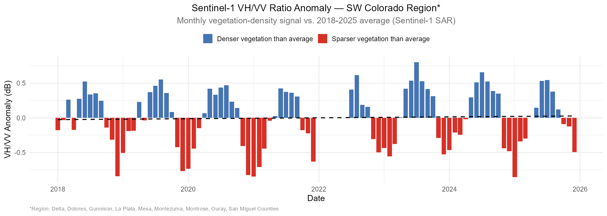
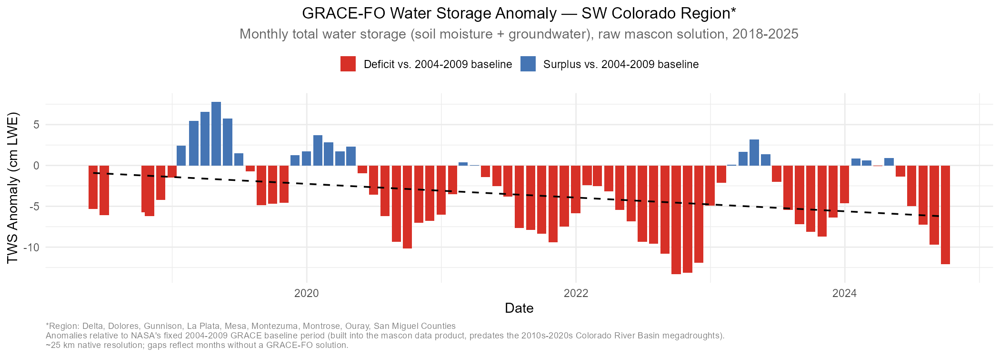
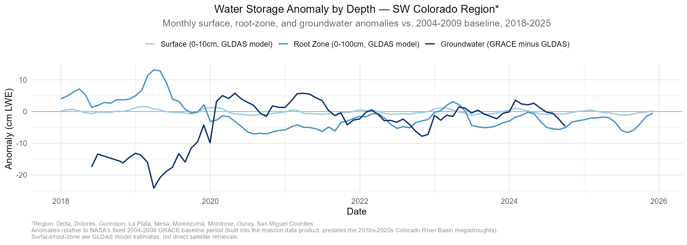

Discovery Farms · SW Colorado
Drought Conditions
& Landscape Change
An exploration of drought severity, vegetation response, and water availability across SW Colorado's agricultural watersheds. Produced in collaboration with Discovery Farms, an agricultural research organization with sites in Grand Valley and SW Colorado. The maps below combine satellite drought classifications, radar-based vegetation and soil signals, and gravity-based water storage estimates to track how conditions have shifted across the region since 2000; longer-term trend charts appear further down the page.
USDM
Drought Monitor
These yearly images come from the U.S. Drought Monitor, a weekly map produced by drought experts who combine many data sources (rainfall, streamflow, soil moisture, and more) into one consensus assessment. Rather than showing every week, this shows each year's peak (worst) drought classification in August, from 2000–2025, so you can compare how bad drought got each year at a glance. The color scale runs from yellow (abnormally dry) through orange and red to dark red — exceptional drought, the most severe category.
Sentinel-1
Vegetation/Soil Signal
These monthly images come from Sentinel-1, a radar satellite that measures the ground regardless of cloud cover, at about 250 m resolution over SW Colorado from 2018–2025. We combine two of its radar signals into a ratio that's mainly sensitive to vegetation cover rather than soil moisture directly — greener areas have denser plant growth (typically wetter conditions), while redder areas are sparser, more bare ground (typically drier).
GRACE — Basin
Colorado River Basin Monitor
These weekly images come from GRACE, a NASA satellite mission that tracks tiny changes in Earth's gravity to estimate underground water storage (soil moisture and groundwater combined). This view is clipped to the Colorado River Basin watershed, showing how water storage compares to its historical average for the same week — red areas are drier than normal, blue areas are wetter than normal.
GRACE — CONUS
GRACE Drought Indicator
Here that same GRACE dataset is zoomed out to the full continental US, so you can see how the Colorado River Basin's drought conditions above fit into the bigger regional and national picture. The resolution is coarse (about 14 km per pixel), so it's best for seeing broad, regional drought patterns rather than fine local detail.
Drought Trends
How Has Drought Changed Over Time?
Five complementary views of drought history across the SW Colorado region — a long-term moisture index spanning nearly seven decades, a modern record of severe drought frequency since 2000, and monthly satellite-derived vegetation and water-storage signals since 2018.

Palmer Drought Severity Index (PDSI) — annual mean across SW Colorado, 1958–present. Negative values indicate drier than average conditions.

Percentage of SW Colorado in D2 (Severe) or worse drought each August, 2000–present.

Monthly Sentinel-1 VH/VV ratio, shown as departure from its own 2018–2025 average — a proxy for vegetation density rather than soil moisture directly. The seasonal cycle is strong and consistent, but there's no statistically significant long-term trend in either the average signal or the size of the summer/winter swing over this 8-year record.

Monthly GRACE-FO total water storage anomaly (soil moisture + groundwater combined), relative to the 2004–2009 baseline. GRACE doesn't measure water directly — it senses tiny changes in Earth's gravity caused by mass shifting in or out of a region, which scientists convert into "liquid water equivalent" (LWE): the depth, in cm, that missing or extra mass would form if spread evenly across the region as a layer of water. This is the raw satellite-measured signal behind the GRACE maps above — distinct from their modeled drought-percentile product, and shown here at its native ~25 km resolution without further smoothing. The baseline is NASA's fixed 2004–2009 reference window built into the GRACE mascon data product itself (not a rolling 30-year normal); it happens to predate the 2010s–2020s Colorado River Basin megadroughts, so today's deficits are measured against a period that wasn't itself unusually wet or dry.

The same total water storage anomaly above, split by depth: surface (0–10cm) and root-zone (0–100cm) soil moisture are modeled estimates (GLDAS), while groundwater is calculated by subtracting that model from the GRACE satellite measurement. (As above, "anomaly" means departure from the 2004–2009 baseline, in cm LWE — not the total amount of water present.) Surface barely moves on this scale not because it isn't responding, but because a 10cm-deep layer can only hold so much water either way — there's a hard ceiling on how far it can drift. Groundwater has no such ceiling: it integrates deficits and surpluses across a much deeper, larger reservoir, so it can swing 20+ cm and stay there for years.
Methods
Data & Approach
All analysis was conducted using Google Earth Engine and Python. Data sources and methods are summarized below.
Data Sources & Methods
- USDM drought maps — weekly classifications, D0–D4, 2000–present (NDMC/NOAA/USDA)
- TerraClimate PDSI — monthly Palmer Drought Severity Index, 1958–present (~4km)
- Landsat 5/7/8/9 — harmonized false color and natural color composites, June–October, 1984–present (30m)
- Sentinel-2 SR — false color composites, July–August, 2017–present (10m)
- GRACE Data Assimilation — weekly soil moisture / groundwater percentile, 2018–present (~14km)
- Sentinel-1 SAR — VH/VV ratio, monthly composites, 2018–present (250m)
- Region: Delta, Dolores, Gunnison, La Plata, Mesa, Montezuma, Montrose, Ouray, San Miguel Counties
- Cloud masking via per-pixel QA band; gap fill using 25th percentile fallback
- Trend lines computed via ordinary least squares linear regression